Bir dijital resimdeki bir kümeyi, grubu ortaya çıkartmak (segmentation) için bir teknik daha, kesit seviyeleri kullanmak. Grup bulmak derken resimdeki diğerlerinden daha ayrı duran, bizim çıplak gözle gördüğümüz bir grubu diğerlerinden ayırıp etrafındaki sınırlar çizmek, ve bunları otomatik olarak yazılımın yapmasını sağlamak.
Kesit seviyeleri tekniği her ne kadar dışarıdan bir eğriyi belli bir enerji fonksiyonunu minimize ederek kümenin etrafında "sarmalayan'' yılan (snake) tekniğine benzese de, aslında daha derin ve kuvvetli özellikleri olan bir yaklaşımdır. Yılan tekniğinde eldeki bir eğriyi bizzat değiştirerek grup etrafını sarmalasına uğraşıyoruz. Kesit seviyeleri ile grubu tanımlayan manipüle ettiğimiz sınıların kendisi değil bir yansımadan dolaylı elde edilen ama kendisi daha yüksek boyutta olan başka bir fonksiyon.
Alttaki görüntüler daha iyi açıklayabilir,
İmajın düzlemde olduğunu düşünürsek o görülen kırmızı çizgiler kesit seviyesi (\(\phi=0\) için). İmaj düzlemi, ve kesit seviyesi iki boyutlu, manipüle edilen ise üç boyutlu bir \(\phi\) fonksiyonu, ve gruplamayı yapan bu fonksiyonun sıfır kesit seviyesindeki kontur çizgileridir, yani \(\phi(x,y,t) = 0\) ne ise gruplama, küme (segment) odur.
Altta, değişen \(\phi\)'nin imaj düzlemindeki değişen kesit seviyesini görebiliyoruz.
Peki \(\phi\) fonksiyonunu imaj üzerindeki yakın duran pikselleri göz önüne alarak (ki kesit seviyesi onların etrafını sarsın) nasıl değiştireceğiz? İşte kesit seviyeleri matematiği burada devreye giriyor.
Ana yüzey fonksiyonu \(\phi(x,y)\), ya da vektörel olarak \(\phi(\vec{x})\), daha basit \(\phi(x)\) diyelim, bu yüzeyi \(t\) ile parametrize edersek kesit seviyesini
\[ \phi(x(t), t) = 0 \]
ile tanımlarız. Üstteki eşitliği \(t\) için elde edilen \(x\) için \(t\) anındaki yüzeyin fonksiyonu olarak düşünebiliriz. Şimdi sıfır seviyesindeki kontur eğrisinin değişimini takip etmek istediğimiz için [5], üstteki eşitliğin \(t\)'ye göre değişiminin açılımını görmek istiyoruz. Hatırlarsak pozisyonun türevi hızdır, ve eğer hızı bilirsek yüzeyin hareketini modelleyebiliriz.
\[ \frac{\partial \phi(x(t),t)}{\partial t} = 0 \]
Zincirleme Kuralını uygulayınca
\[ \frac{\partial \phi}{\partial x(t)} \frac{\partial x(t)}{\partial t} + \frac{\partial \phi}{\partial t} = 0 \]
Tanım itibariyle \(\partial \phi / \partial x(t)\) kısmi türev yüzeyimizin gradyanı, bunu temel çok boyutlu Calculus'tan biliyoruz. Diğer notasyonu da biraz kısaltınca
\[ \nabla \phi x_t + \phi_t = 0 \]
Üstte eğrinin hareketinin \(\phi\)'ye normal / dik olduğunu söylemiş olduk, eğer yönü birim vektör olarak göstermek gerekirse, \(\frac{\nabla \phi}{||\nabla \phi ||}\). Şimdi hızın kendisi lazım, düzlemdeki yere bağlı olarak değişebilecek bir \(F\) kuvveti ile yönü çarparak yönsel hızı elde edebiliriz, \(x_t = F \frac{\nabla \phi}{||\nabla \phi ||}\). Yerine koyarsak,
\[ \nabla \phi F \frac{\nabla \phi}{||\nabla \phi ||} + \phi_t = 0 \]
\[ F \frac{||\nabla \phi||^2}{||\nabla \phi ||} + \phi_t = 0 \]
\[ F ||\nabla \phi|| + \phi_t = 0 \]
Biraz daha organize edince kesit seviyeleri denklemini elde ediyoruz.
\[ \phi_t = - F ||\nabla \phi|| \]
Bu bize yüzeyin değişim hızı \(\phi_t\)'yi veriyor.
Hesaplama
\(\phi\)'nin başlangıç değerlerini biliyorsak ve değişim hız formülünü baz alarak hareket denklemini çözebiliriz / zamanda ileri doğru taşıyabiliriz. Yani bulmak istediğimiz herhangi bir \(t\) anındaki \(\phi\). Hesabı yapmanın en basit yolu Sonlu Farklar (Finite Differences) yöntemi ile. Temel Calculus'tan hatırlarsak,
\[ f'(x) = \frac{f(x+\Delta x) - f(x)}{\Delta x} \]
Bunu \(\phi\) için uygularsak,
\[ \frac{\partial \phi(x(t),t)}{\partial t} = \frac{\phi(x(t),t+\Delta t) - \phi(x(t),t)}{\Delta t} \]
\[ \Delta t \phi_t = \phi(x(t),t+\Delta t) - \phi(x(t),t) \]
\[ \phi(x(t),t+\Delta t) = \phi(x(t),t) + \Delta t \phi_t \]
Şimdi \(\phi_t\) için daha önce bulduğumuz formülü koyarsak,
\[ \phi(x(t),t+\Delta t) = \phi(x(t),t) - \Delta t F ||\nabla \phi|| \]
Böylece değişim fonksiyonunu elde etmiş olduk. Yapay Öğrenim konusunu bilenlere üstteki formül tanıdık gelebilir, \(\phi\) üzerinde \(t\) bazlı olarak gradyan inişi (gradient descent) yapmış oluyoruz bir bakıma.
\[ \phi' = \phi + \Delta t F ||\nabla \phi || \]
Not: Üstte \(+\Delta t F\) var fakat türetimden \(-\Delta t F\) gelmesi gerekiyor. Bu nasıl oldu? Eğer ilerideki kodda işareti değiştirsek eksinin işlemeyeceğini görürdük, artı olması gerekiyor. Bu gradyan tanımıyla alakalı, fakat istenen işarete erişmek için sonlu farklar başlangıcında ufak bir değişiklik yeterli olurdu.
Şimdi \(F\) konusuna gelelim; bu \(F\)'nin seçilmesi kesit seviyesi yöntemimize direk etki edecektir. Sonuç olarak eğriyi belli bir yönde, ve hızda ittiren "kuvvet'' budur. \(F\) resmin her noktasında tanımlı bir nevi hız, kuvvet alanı (velocity field) olarak görülebilir, her noktada bize \(\phi\)'nin hareketinin yönünü ve büyüklüğünü verir.
O zaman düşünürsek, imajda gruplama yapmak istiyoruz, ve alttaki gibi bir resim var diyelim,
\(F\)'nin ortadaki objenin sınırlarına kadar yüksek olmasını ama sınırlarda çok az hatta sıfır olmasını isteyebiliriz, değil mi? Bu dolaylı olarak obje tanımlamayı gerçekleştirecektir, çünkü \(\phi\) yüzeyi objeye gelinceye kadar hızla ilerleyecek, ardından obje çevresine geldiği noktalarda yavaşlayacaktır, ve yan etki olarak kesit seviyesi nesneyi sarmalamış olur, ve bu noktada gruplamayı bitmiş kabul edebiliriz.
\(F\)'yi o zaman direk imajın kendisinden hesaplayalım, ve onu bir nevi kenar algılayıcı (edge detector) olarak görelim. Eh en basit kenar bulucu gradyan olduğuna göre imajın gradyanını almak yeterli olacaktır. \(I\) imajı için \(g\) gradyanı [6],
\[ g(I) = \frac{1}{1 + || \nabla I ||^2} \]
Hepsini bir araya koyunca alttaki kod yazılabilir,
from skimage import color, io
import scipy.ndimage
def grad(x):
return np.array(np.gradient(x))
def norm(x, axis=0):
return np.sqrt(np.sum(np.square(x), axis=axis))
def stopping_fun(x):
return 1. / (1. + norm(grad(x))**2)
def default_phi(x):
# phi yuzeyini imaj disindaki 5 piksel genisligindeki bantta 1
# bant icinde ise -1 olarak tanimliyoruz
phi = np.ones(x.shape[:2])
phi[5:-5, 5:-5] = -1.
return phi
img = io.imread('twoObj.bmp')
img = color.rgb2gray(img) # grilestir
img = img - np.mean(img) # ortalamayi cikart
# puruzsuzlestirme uygula yanyana pikseller daha benzer olsun
img_smooth = scipy.ndimage.filters.gaussian_filter(img, sigma=2)
F = stopping_fun(img_smooth)
dt = 1.
n_iter = 100
phi = default_phi(img)
for i in range(n_iter):
dphi = grad(phi)
dphi_norm = norm(dphi)
dphi_t = F * dphi_norm
phi = phi + dt * dphi_t
if i%10==0:
plt.imshow(img,cmap = 'gray')
plt.contour(phi, levels=[0],colors=['red'])
plt.savefig('img2/out-%03d.png' % i)
plt.close()İşlemden seçilmiş üç kare alttadır,
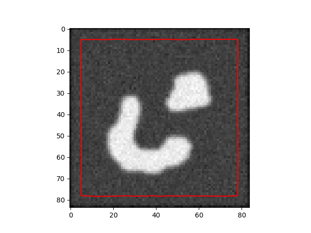 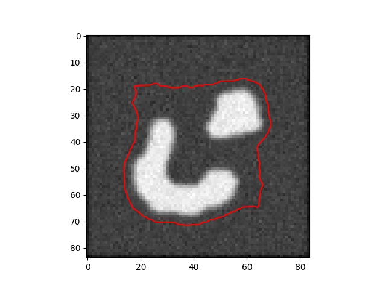 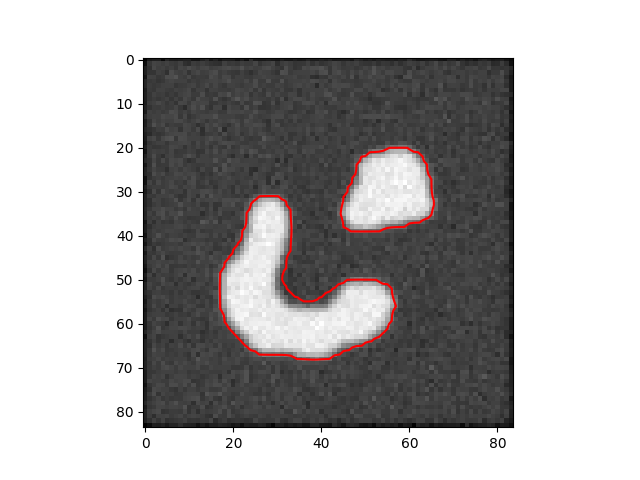
Kesit seviyeleri tekniğinin faydalarını görmek zor değil; üç boyutlu fonksiyonu daha esnek yönlerde değiştirebileceğimiz için onu düzlemdeki yansımaları birbirinden kopuk duran (ama alakalı) obje gruplarını bile bulup çıkartabilir.
Eski Yazı
Kesit Seviyeleri, Kenar Bazlı İmaj Gruplamak
Bir dijital imajı renklere, objelere göre belli parçalara bölmek (segmentation) için, matematiksel bir formül kullanmak iyi çözümlerden biridir. Bunu yapmanın bazı yolları var. Basitleştirerek bir örnek verelim: diyelim ki gruplama için elimizdeki formül bir yuvarlak formülü \(x^2+y^2 - c = 0\), ki \(c\) bir sabit. Bu formülü x ve y kordinatları üzerinde bastığımız zaman radius'u \(\sqrt{c}\) olan bir çember elde ederiz. Gruplama için bu çemberi büyütüp küçültebildiğimizi farzedelim, çember imaj üzerindeki istediğimiz bölüme en iyi uyduğu anda gruplamayı başarılı olarak kabul ediyoruz.
Fakat problem şurada: eğer imajda birden fazla grup var ise, o zaman birden fazla çember gerekecektir, bu sefer algoritmik olarak üstteki formülü ikinci, üçüncü kere yaratmamız, ve o formüllerin o gruplara uyumunu ayrı ayrı takip etmemiz gerekirdi. Ya da diyelim ki özyineli (iterative) bir uydurma işlemi takip ediyoruz, bu işlem sırasında belki iki çemberin birleşmesi gerekse, o zaman iki formülü silip, yerine yenisini oluşturmakla uğraşmak gerekli olacaktı. Bunlar hem matematiksel, hem kodlama açısından külfet oluşturacaktır.
Kesit Seviyeleri kavramını kullanarak bu işi daha basitleştirebiliriz. Diyelim ki bölme görevini yapan \(\phi\) adli fonksiyonumuzu 2 boyutlu olmak yerine 3 boyutlu eksende tanımladık, ve, 2 boyutta bölme yapma görevini onun bir kesitine verdik. Kesit derken, alttaki üç boyutlu fonksiyonu yatay olarak bir noktadan "kestiğimizi'' farz ediyoruz, ve o kesit üzerinde düşen \(\phi\) değerlerine bakıyoruz.
Bakıç açışımızı, tanımlamamızı değiştirerek, bazı avantajlar elde etmeyi umuyoruz aslında. Altta iki tane \(\phi\) fonksiyonu ve onların altında kesitlerini görebiliriz.
Kesit Seviyeleri tekniğini kullanarak elde ettiğimiz avantaj nedir? Artık sadece tek bir \(\phi\) fonksiyonu kullanarak 2 boyutlu imajımız üzerinde birbirinden ayrı gruplamalar yaratabiliyoruz. Bu gruplar birbiri ile birleşebilir, ayrılabilir, bu artık bizi ilgilendirmiyor. Biz sadece 3. boyuttaki \(\phi\) fonksiyonunu değiştirmekle uğraşacağız, imaj üzerindeki gruplamalar ise o fonksiyonun 2. boyuta yansıması (projection) üzerinden kendiliğinden gerçekleşecekler.
Matematiksel olarak \(\phi\) fonksiyonunu nasıl temsil ederiz? \(\phi\) fonksiyonu \(x\), \(y\), boyutlarını alıp bize bir üçüncü \(z\) boyutu döndürmeli, ayrıca bu fonksiyonu imajı parçalarına ayırma işlemini gerçekleştirmek için kademeli olarak değiştirmeyi planladığımıza göre, o zaman bir \(t\) değişkeni de gerekiyor. Yani \(\phi(x,y,t)\) fonksiyonu. Gruplama için kullanılacak kesiti ise sıfır kesiti olarak alalım, yani \(\phi(x,y,t) = 0\). Doğal olarak
\[ \frac{d}{dt}(\phi(x,y,t) = 0) = 0 \]
Şimdi \(x\), ve \(y\) değişkenlerinin zaman göre değişimini formüle bir şekilde dahil etmek lazım. Bunun için sıfır kesit seviyesi üzerinde bir parçacık hayal edilir, ve bu parçacığın gittiği yol \(x(t)\), ve \(y(t)\) olarak tanımlanır. O zaman
\[ \frac{d}{dt}(\phi(x(t),y(t),t)) = 0 \]
Tam diferansiyel formülünden hareketle:
\[ d(\phi(x(t),y(t),t) = \frac{\partial \phi}{\partial x}dx + \frac{\partial \phi}{\partial y}dy + \frac{\partial \phi}{\partial t}dt = 0 \]
\[ \frac{d(\phi(x(t),y(t),t))}{dt} = \frac{\partial \phi}{\partial x}\frac{dx}{dt} + \frac{\partial \phi}{\partial y}\frac{dy}{dt} + \frac{\partial \phi}{\partial t} = 0 \]
\[ = \frac{\partial \phi}{\partial x}\frac{dx}{dt} + \frac{\partial \phi}{\partial y}\frac{dy}{dt} + \phi_t = 0 \qquad (1) \]
Temsilen daha kısa bir işaret kullanmak gerekirse, \(\bigtriangledown\) ile \(\phi\)'nin gradyanını (gradient) alarak, elde edilecek vektörün nokta çarpımını kullanabiliriz. O zaman formül (1) daha kısa olarak:
\[ \phi_t + \bigtriangledown \phi \cdot \vec{V} = 0 \]
olarak temsil edilebilir, ki
\[ \bigtriangledown \phi = \bigg( \frac{\partial \phi}{\partial x}, \frac{\partial \phi}{\partial y} \bigg) \]
\[ \vec{V} = \bigg( \frac{dx}{dt} , \frac{dy}{dt} \bigg) \]
İki vektörün nokta çarpımı bilindiği gibi sırayla her iki vektörün sırasıyla uyan elemanlarının birbirleri ile çarpılması ve o çarpımların toplanmasıdır.
\(\vec{V}\) vektörü neyi temsil eder? Formüle göre bu vektör \(\phi\)'nin üzerindeki değişimi etkiliyor, ve bu değişimler \(t\)'nin değişimine göre tanımlandığına göre bu değerler "hız'' olarak tanımlanabilir. İmaj bağlamında düşünürsek mesela \(\phi\) renklerin aynı olduğu yerlerde yüksek hızda, renklerin değiştiği yerler düşük hızda değişebilir şeklinde bir kurgu yapılabilir, işte bu bölgelerde değişiminin hızını \(\vec{V}\) ile gösterebiliriz.
\(\vec{V}\) yerine kesit seviyelerine dik olan (normal) vektörler ile çalışmak isteseydik, \(\vec{V}\)'yi dik ve teğet bileşenlerine ayırarak tekrar temsil edebilirdik: \(\vec{V} = V_N\vec{N} + V_T\vec{T}\). Bu formülde \(\vec{T}\) teğet, \(\vec{N}\) dik vektörler, \(V_N\) ve \(V_T\) skalar. Yerine koyalım:
\[ \phi_t + \bigtriangledown \phi \cdot (V_N\vec{N} + V_T\vec{T}) = 0 \]
\(\phi\)'ye göre dik vektörün diğer bir formülü \(\vec{N} = \frac{\bigtriangledown\phi}{|\bigtriangledown\phi|}\) olduğuna göre
\[ \phi_t + (\bigtriangledown \phi \cdot V_N\frac{\bigtriangledown\phi}{|\bigtriangledown\phi|} + \bigtriangledown \phi \cdot V_T\vec{T}) = 0 \]
Devam edelim: \(\bigtriangledown \phi\) yüzeye dik olduğuna göre, bu dik vektörün teğet olan \(\vec{T}\) ile noktasal çarpımı sıfır değerini verecektir, o çarpım formülden atılabilir. Kalanlar:
\[ \phi_t + (\bigtriangledown \phi \cdot V_N\frac{\bigtriangledown\phi}{|\bigtriangledown\phi|}) = 0 \]
Daha da kısaltabiliriz: \(\bigtriangledown \phi \cdot \bigtriangledown \phi = |\bigtriangledown \phi|^2\) olduğunu biliyoruz, gradyanın kendisi ile noktasal çarpımı, o gradyan vektörünün uzunluğunun karesidir. Daha genel olarak, bir vektörün uzunluğu, o vektörün kendisi ile noktasal çarpımının kareköküdür. O zaman en son formülde bu çarpımı gerçekleştirip, uzunluk olarak yazalım:
\[ \phi_t + V_N\frac{|\bigtriangledown\phi|^2}{|\bigtriangledown\phi|} = 0 \]
\[ \phi_t + V_N |\bigtriangledown\phi| = 0 \]
Şimdi bu formül hakkında biraz anlayış geliştirelim. Eğer elimizdeki bir \(\phi\) seviye kesitinin şeklen olduğu gibi kalmasını ama sadece küçülmesini isteseydik, \(\phi\)'nin normalinin tersi yönünde bir büyüme tanımlamamız gerekirdi. Normal vektör dışa doğru işaret ettiğine göre üstteki formülde mesela \(V_N = -1\) tanımlayabilirdik. O zaman
\[ \phi_t + |\bigtriangledown\phi| = 0 \]
\[ \phi_t = - |\bigtriangledown\phi| \]
Hesapsal olarak bunu nasıl gerçekleştiririz? 80 x 80 boyutunda bir matris içinde \(\phi\) fonksiyonu ayrıksal olarak tutalım. Yani 80 tane x, 80 tane ayrı y değeri var, her x ve y değerlerin kombinasyonlarına tekabül eden \(\phi\) değerleri bu matris içinde. Gradyanın ne olduğunu hatırlayalım. Gradyan
\[ \bigtriangledown \phi = \bigg( \frac{\partial \phi}{\partial x}, \frac{\partial \phi}{\partial y} \bigg) \]
olarak tanımlıdır, ve her \((x_i,y_i)\) noktasındaki \(\phi(x_i,y_i)\) değerine göre değişik bir vektör sonucunu getirecektir. Bilgisayar dünyasında parçalı türevler hesapsal "farklılıklara'' dönüşürler, phi matrisindeki farklılıkları Python ile
gradPhiY, gradPhiX = np.gradient(phi)olarak hesaplayabiliriz. Üstte elimize geçen gradyan dizinlerindeki değerler ile \(|\bigtriangledown\phi|\) büyüklüğünü hesaplayabiliriz, ve bu sonucu \(\phi\) üzerindeki değişim oranı \(\phi_t\) olarak kabul ederiz. O zaman \(\phi_t\) ile zaman \(t\) değimi dt çarptığımız zaman ele geçecek olan \(\phi\)'nin değişimidir. Döngünün her basamağında eski phi değerlerine bu farkları eklediğimiz zaman \(\phi\) fonksiyonu istediğimiz gibi evrilecektir.
Alttaki kodda bizim başlangıç \(\phi\)'miz kenarlardan w uzaklığında içi boş bir kutu olacak.
İmaj Gruplamak
İmajı bölümlere ayırmak için (segmentation) birkaç faktörün bileşimi kullanılıyor. Köşeleri kullanan aktif kontur (edge based active contour) yönteminde ortalama eğim ve imajın piksel değerlerinin farklılıkları (image gradient) aynı anda kullanılır. Yani kesit seviyesini ilerletirken hızı hem eğime oranlıyoruz, hem de imaj piksel renk değerleri arasındaki farka ters oranda hızlandırıyor, ya da yavaşlatıyoruz. Böylece kesit seviyemiz renk farklılığı çok olmayan yani büyük bir ihtimalle tek bir objeye ait bir bölgede hızla ilerliyor, büyük renk farkının olduğu büyük bir ihtimalle bir kenar noktasına gelince ise yavaşlıyor. O sırada kesit seviyesinin geri kalan tarafları tabii ki başka hızlarda hareket ediyor olabilirler, zaten işin püf noktası burada, sonunda resim bölgelere ayrılmış oluyor.
Bitirirken önemli gözlemi vurgulayalım. Problemi matematiksel olarak temsil ederken, hedefe doğru türetirken sürekli (continous) alemde, sürekli, kesintisiz fonksiyonlarla iş yapıyoruz. Hesaplama anı gelince sürekli fonksiyonları ayrıksal (discrete) hale çeviriyoruz, işte uygulamalı matematiğin hesapsal kısmı burada devreye giriyor. Fakat diferansiyel denklemler, fonksiyonlar, türevler gibi sürekli matematiğin kavramları çok önemli, bunlar olmasa problemi soyut bir şekilde temsil edemez, ve basitleştiremezdik. Temel matematiğin kavramlarını kullanırken yüzyılların matematiksel bilgisi devreye girebiliyor, matematiğin en yoğun şekilde kullanıldığı fizikten bol bol teknik alınabilir. Yani söylemek istediğimiz problemi çözmek için hemen kodlamaya başlamıyoruz, düşünsel eylemin önemli bir kısmı matematiksel formüllerle (belki kalem kağıtla) yapılıyor.
import numpy as np
import matplotlib.pyplot as plt
import scipy.signal as signal
import scipy.ndimage as image
import time
def gauss_kern():
""" Returns a normalized 2D gauss kernel array for convolutions """
h1 = 8
h2 = 8
x, y = np.mgrid[0:h2, 0:h1]
x = x-h2/2
y = y-h1/2
sigma = 10.0
g = np.exp( -( x**2 + y**2 ) / (2*sigma**2) );
return g / g.sum()
Img = plt.imread("twoObj.bmp")
Img = Img[::-1]
g = gauss_kern()
Img_smooth = signal.convolve(Img,g,mode='same')
Iy,Ix=np.gradient(Img_smooth)
absGradI=np.sqrt(Ix**2+Iy**2);
rows, cols = Img.shape
# initial function phi - level set is a square 4 pixels
# away from borders on each side, in 3D it looks like an empty
# box
c0=4
w=4
nrow, ncol=Img.shape
phi=c0*np.ones((nrow,ncol))
phi[w+1:-w-1, w+1:-w-1]=-c0
# edge-stopping function
g = 1 / (1+absGradI**2)
# gradient of edge-stopping function
gy,gx = np.gradient(g)
# gradient descent step size
dt=1
# number of iterations after which we reinitialize the surface
num_reinit=10
phiOld=np.zeros((rows,cols))
# number of iterations after which we reinitialize the surface
iter=0
while iter<150:
# gradient of phi
gradPhiY, gradPhiX = np.gradient(phi)
# magnitude of gradient of phi
absGradPhi=np.sqrt(gradPhiX**2+gradPhiY**2)
# normalized gradient of phi - eliminating singularities
normGradPhiX=gradPhiX/(absGradPhi+(absGradPhi==0))
normGradPhiY=gradPhiY/(absGradPhi+(absGradPhi==0))
divYnormGradPhiX, divXnormGradPhiX=np.gradient(normGradPhiX)
divYnormGradPhiY, divXnormGradPhiY=np.gradient(normGradPhiY)
# curvature is the divergence of normalized gradient of phi
K = divXnormGradPhiX + divYnormGradPhiY
tmp1 = g * K * absGradPhi
tmp2 = g * absGradPhi
tmp3 = gx * gradPhiX + gy*gradPhiY
dPhiBydT =tmp1 + tmp2 + tmp3
phiOld=phi
# level set evolution equation
phi = phi + ( dt * dPhiBydT )
iter=iter+1
if np.mod(iter,20)==0:
f=plt.figure()
plt.imshow(Img, cmap='gray')
CS = plt.contour(phi,0, colors='r')
plt.savefig('/tmp/level_2_%03d.png' % iter)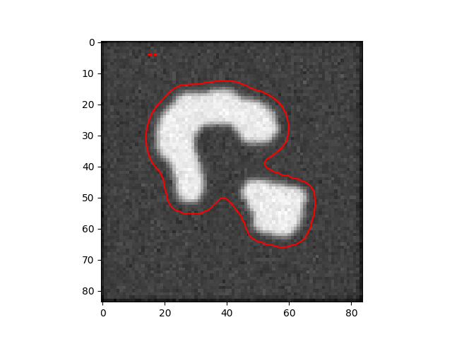 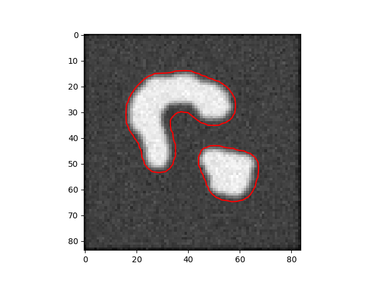
Ortalama Eğim (Mean Curvature) Kullanmak
Eğer imaj içindeki değer farklılıklarını hız için kullanmak yerine yerine sıfır kesit seviyesinin herhangi bir noktada ne kadar "eğri'' olduğuna göre ilerlemesini işletseydik ne olurdu? Diyelim ki çok eğri bölgelerde çok hızlı, az eğik (düz, düze yakın) bölgelerde ilerleme az hız istiyoruz. O zaman hangi şekille başlarsa başlasındalar \(\phi\) kesiti sonuçta bir çember şekline doğru evrilecektir. Ortalama eğim (mean curvatüre) hesabı için şu denklem kullanılır:
\[ \kappa = -div \bigg( \frac{\bigtriangledown \phi} {|\bigtriangledown \phi| } \bigg) \]
Bu formul nereden geliyor?
Eğim (Curvature)
Kesit seviyeleri tekniğinde bir eğri normal formda değil, dolaylı (implicit) bir fonksiyon ile \(F(x,y) = 0\) olarak gösterilir. Bu fonksiyonun tam diferansiyelini alırsak,
\[ dF = F_x dx + F_y dy = 0 \]
\[ dy = -F_x / F_y dx \]
\[ y' = \frac{dy}{dx} = -F_x / F_y = f'(x) = \frac{df}{dx} \]
Burada bir faraziye daha var, o da aslında ilk verilen formülde olmasa bile \(y=f(x)\) olarak kabul etmemiz, yani \(F(x,y)\) nasıl bir formül olursa olsun, \(y\)'nin \(x\)'leri içerecek şekilde tekrar düzenlenebileceğini farz etmemiz, böylece \(F(x,f(x))\) olabileceğini söylemiş oluyoruz [4].
Şimdi \(y'\) ifadesinin türevini bir daha alalım. Yukarıdaki \(y'\) formülünde en sağ taraf bir bölme işlemi içerdiği için burada Calculus'un Bölümler Kuralını (Quotient Rule) uygulamamız lazım (detaylar için Bölüm Kuralı yazısına bakınız). Bu kural şöyle gösterilir:
\[ \frac{d}{dx}\bigg(\frac{u}{v}\bigg) = \frac{\displaystyle \frac{v du}{dx} - \frac{u dv}{dx}}{v^2} \]
Bölümler Kuralı için \(u\) ve \(v\) tanımları nedir?
\[ u = -F_x(x,f(x)) \]
\[ v = F_y(x,f(x)) \]
O zaman
\[ v \frac{du}{dx} = F_y \frac{dF_x}{dx} \qquad (1) \]
\[ u \frac{dv}{dx} = -F_x \frac{dF_y }{dx} \qquad (2) \]
Bunlardan mesela \(dF_x/dx\) üzerinde Zincirleme Kanunu (Chain Rule) uygulamak lazım (bu kural tam integral kuralının bir sonucu).
\[ \frac{d F_x(x,f(x)) }{dx} = \frac{\partial F_x}{\partial x}(x,f(x))+\frac{\partial F_x}{\partial y}\frac{df}{dx}\\ \]
\[ = F_{xx}(x,f(x))+F_{xy}(x,f(x))f'(x) \qquad (3) \]
\[ \frac{d F_y(x,f(x)) }{dx} = F_{xy}(x,f(x))+F_{yy}(x,f(x))f'(x) \qquad (4) \]
Zincirleme Kanunu niye üstteki şekilde açıldı? Tam Diferansiyeli bir daha hatırlayalım:
\[ df = \frac{\partial f}{\partial x} dx + \frac{\partial f}{\partial y} dy \]
\[ \frac{df}{dx} = \frac{\partial f}{\partial x} \frac{dx}{dx} + \frac{\partial f}{\partial y} \frac{dy}{dx} \]
\[ \frac{df}{dx} = \frac{\partial f}{\partial x} + \frac{\partial f}{\partial y} \frac{dy}{dx} \]
O zaman formüller (1) (2) (3) ve (4) bir araya konulursa,
\[ y '' = - \frac{F_yF_{xx} - F_y F_{xy}\frac{F_x}{F_y} - F_xF_{xy} + F_xF_{yy}\frac{F_x}{F_y}}{F_y^2}\\ \]
\[ y '' = - \frac{F_yF_{xx} - F_{xy}F_x - F_xF_{xy} + \frac{F_x^2F_{yy}}{F_y}}{F_y^2} \]
Üstteki bölümün hem bölen, hem bölünen terimlerini \(F_y\) ile çarparsak, ve sadeleştirirsek
\[ y '' = - \frac{F_y^2F_{xx} - 2F_{xy}F_xF_y + F_x^2F_{yy}}{F_y^3} \]
Şimdi surada [2] türetimi gösterilen eğim formülüne bakalım. Not: Eğer
\[ \kappa = \frac{x'y''-y'x''}{\bigg(x'^2 + y'^2 \bigg)^{3/2}} \]
formülünün alttaki formüle nasıl dönüştüğü tam anlaşılır değilse, hatırlayalım ki, \(y=f(x)\), ve \(x'=1\), ve \(x'' = 0\).
Bu formülün Courant [1] sf. 231'de benzer bir formunu görüyoruz (Bu arada o karmaşık formül yerine yaklaşıksal olarak hesaplama sırasında sadece \(f''\) kullanmak ta mümkün [3, giriş bölümü])
\[ \kappa = \frac{f''}{(1+f'^2)^{3/2}} \]
Bu formüldeki \(f''\) yani \(y''\) için üstte bulduğumuz sonucu, \(f'\) yani \(y'\) için bu yazının başındaki formülü koyarsak,
\[ \kappa = \frac {-\frac {\displaystyle F_y^2F_{xx} - 2F_{xy}F_xF_y + F_x^2F_{yy}}{\displaystyle F_y^3}} {(1+f'^2)^{3/2}} \]
Bölen kısmı nedir?
\[ (1+f'^2)^{3/2} = \bigg( 1 + \bigg(\frac{-F_x}{F_y}\bigg)^2 \bigg)^{3/2} \]
\[ = \bigg( 1 + \frac{F_x^2}{F_y^2} \bigg)^{3/2} \]
\[ = \bigg( \frac{F_y^2 + F_x^2}{F_y^2} \bigg)^{3/2} \]
\[ = (F_y^2 + F_x^2)^{3/2}(F_y^{-2})^{3/2} \]
\[ = (F_y^2 + F_x^2)^{3/2}F_y^{-6/2} \]
\[ = (F_y^2 + F_x^2)^{3/2}F_y^{-3} \]
Yerine koyarsak,
\[ \kappa = \frac{\displaystyle - \frac{F_y^2F_{xx} - 2F_{xy}F_xF_y + F_x^2F_{yy}}{F_y^3}} {(F_y^2 + F_x^2)^{3/2}F_y^{-3}} \]
\(F_y^{-3}\) ve \(F_y^{3}\) birbirlerini iptal ederler ve sonuç:
\[ \kappa = \frac{F_y^2F_{xx} - 2F_{xy}F_xF_y + F_x^2F_{yy}}{(F_y^2 + F_x^2)^{3/2}} \qquad (5) \]
Üstteki ünlü eğim formülüdür.
Bu eğim formülünün diğer bir şekli şöyledir (\(F\) yerine \(\phi\) kullanırsak)
\[ \kappa = \bigtriangledown \cdot \frac{\bigtriangledown \phi}{|\bigtriangledown \phi|} \]
Bunun okunuş şekli "birim normal gradyanın uzaklaşım ölçüsü (divergence of the unit normal gradient)'' şeklindedir. Acaba bu formül, (5). formül ile uyumlu mu?
\[ \kappa = \nabla \cdot \frac{\nabla \phi}{|\nabla \phi|} \]
\[ = \nabla \cdot \frac{(\phi_x,\phi_y)}{\sqrt{\phi_x^2+\phi_y^2}} \]
\[ = \left(\partial_x \frac{\phi_x}{\sqrt{\phi_x^2+\phi_y^2}}\right)+ \left(\partial_y \frac{\phi_y}{\sqrt{\phi_x^2+\phi_y^2}}\right) \]
\[ = \frac{\phi_{xx}}{\sqrt{\phi_x^2+\phi_y^2}} - \frac{\phi_x (\phi_x\phi_{xx}+\phi_y\phi_{xy})} {(\phi_x^2+\phi_y^2)^{3/2}} + \frac{\phi_{yy}}{\sqrt{\phi_x^2+\phi_y^2}} - \frac{\phi_y(\phi_x\phi_{xy}+\phi_y\phi_{yy})} {(\phi_x^2+\phi_y^2)^{3/2}} \]
\[ = \frac{\phi_{xx}(\phi_x^2+\phi_y^2) - \phi_x (\phi_x\phi_{xx}+\phi_y\phi_{xy}) +\phi_{yy}(\phi_x^2+\phi_y^2) - \phi_y(\phi_x\phi_{xy}+\phi_y\phi_{yy})}{(\phi_x^2+\phi_y^2)^{3/2}} \]
\[ = \frac{\phi_{xx}\phi_y^2 - 2\phi_x\phi_y\phi_{xy} + \phi_{yy}\phi_x^2}{(\phi_x^2+\phi_y^2)^{3/2}} \]
Bu formül bizim (5). formül ile tıpatıp aynı.
Üstteki işlemlerde uzaklaşım ölçüsü (divergence) operatörü \(\nabla \cdot\) ile gradyan operatörü \(\nabla\) arasındaki farkı belirtelim: \(\nabla \cdot\) operatörü \(F(x,y)\) üzerinde kısmi türevlerin toplamını verir, yani bir skalar tek sayı döndürür. Gradyan ise her bir elemanı bir kısmi türeve tekabül eden bir vektör geri getirir.
Python Numpy kodlaması bağlamında, daha önce Kesit Seviyeleri yazısında ayrıksal olarak bir phi değişkeni içindeki bir fonksiyon üzerinde eğimselliği şöyle hesaplamıştık:
gradPhiY, gradPhiX = np.gradient(phi)
absGradPhi=np.sqrt(gradPhiX**2+gradPhiY**2)
normGradPhiX=gradPhiX/(absGradPhi+(absGradPhi==0))
normGradPhiY=gradPhiY/(absGradPhi+(absGradPhi==0))
divYnormGradPhiX, divXnormGradPhiX=np.gradient(normGradPhiX)
divYnormGradPhiY, divXnormGradPhiY=np.gradient(normGradPhiY)
K = divXnormGradPhiX + divYnormGradPhiYBu satırların \(\nabla \cdot \frac{\nabla \phi}{|\nabla \phi|}\) ifadesiyle birebir uyum gösterdiğini herhalde görebiliyoruz. Satır 1, \(\nabla \phi\) ifadesidir. Satırlar 4-5 \(\frac{\nabla \phi}{|\nabla \phi|}\) işlemini gerçekleştiriyor, gradyanı onun uzunluğuna (magnitude) bölerek onu birim vektörü haline getiriyor. Satırlar 7-10 tekrar sonucun gradyanını bir daha alıyor, ama bu sefer hesapsal kısmi türevleri birbiriyle topluyor, böylece uzaklaşım ölçüsü (divergence) hesaplanmış oluyor. Tüm bu işlemlerin sonucu eğimsellik \(\kappa\) oluyor.
Dikkat edilirse Python kodundaki K yani \(\kappa\), N x N boyutlu bir matristir, bu mantıklı çünkü \(\kappa\) hesabı için kullandığımız \(F_x\), \(F_y\) gibi türevler aslında \(F_x(x,y)\), \(F_y(x,y)\) formüllerine sahipler, yani her \(x,y\) kombinasyonu için farklı bir sonuç döndürebilirler. Bu sebeple K yani \(\kappa\) \(\phi\) fonksiyonunun her \(x,y\) noktası için tanımlıdır.
Bazen literatürde \(\nabla \cdot\) yerine \(div(..)\) kullanıldığını görebilirsiniz, bu operatörlerin ikisi de aynıdır.
Kodu görelim,
import numpy as np
import matplotlib.pyplot as plt
from mpl_toolkits.mplot3d import Axes3D
import numpy as np
def plot_phi(phi):
fig = plt.figure()
ax = Axes3D(fig)
x = []
y = []
for (i,j),val in np.ndenumerate(phi):
x.append(i)
y.append(j)
ax.plot(xs=x, ys=y, zs=phi.flatten(),
zdir='z', label='ys=0, zdir=z')
f, ax = plt.subplots()
# initial function phi - level set is a square 4 pixels
# away from borders on each side, in 3D it looks like an empty
# box
c0=2; w=2
nrow, ncol= (30,30)
phi=c0*np.ones((nrow,ncol))
phi[w+1:-w-1, w+1:-w-1]=-c0
dt=1.
phiOld=np.zeros((nrow,ncol))
iter=0
while iter < 50:
# gradient of phi
gradPhiY, gradPhiX = np.gradient(phi)
# magnitude of gradient of phi
absGradPhi=np.sqrt(gradPhiX**2+gradPhiY**2)
# normalized gradient of phi - eliminating singularities
normGradPhiX=gradPhiX/(absGradPhi+(absGradPhi==0))
normGradPhiY=gradPhiY/(absGradPhi+(absGradPhi==0))
divYnormGradPhiX, divXnormGradPhiX=np.gradient(normGradPhiX)
divYnormGradPhiY, divXnormGradPhiY=np.gradient(normGradPhiY)
# curvature is the divergence of normalized gradient of phi
K = divXnormGradPhiX + divYnormGradPhiY
dPhiBydT = K * absGradPhi # makes everything circle
# level set evolution equation
phi = phi + ( dt * dPhiBydT )
if iter % 10 == 0:
CS = plt.contour(phi,0,colors='r')
plt.hold(False)
plt.savefig('img1/level_1_'+ str(iter) + '.png')
#plot_phi(phi)
plt.savefig('img1/phi_1_'+ str(iter) + '.png')
iter += 1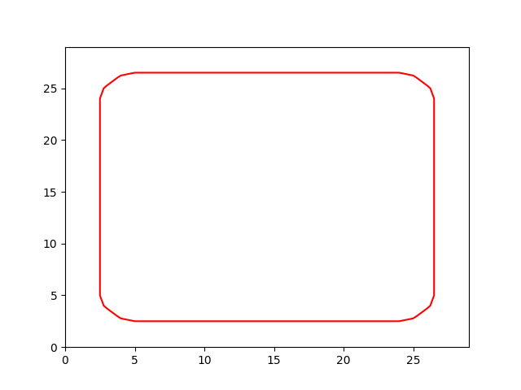  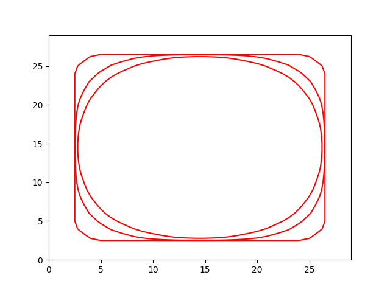 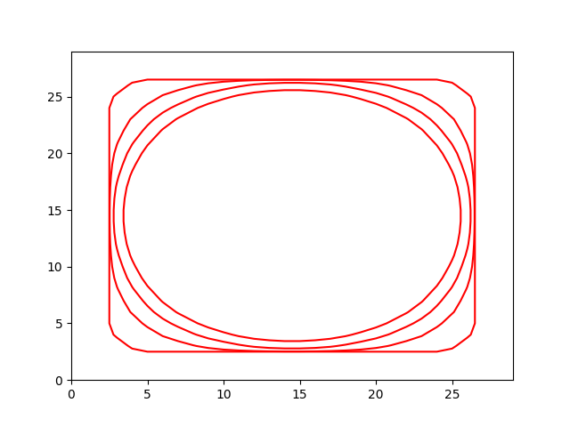 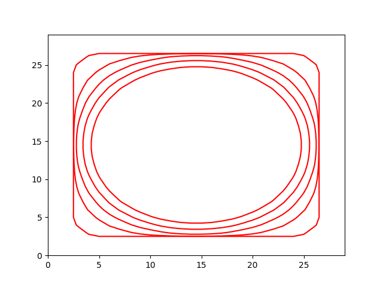
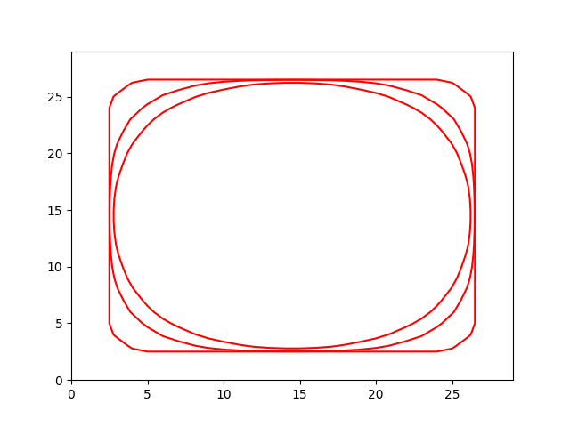 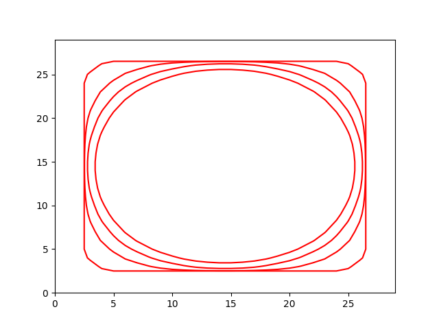 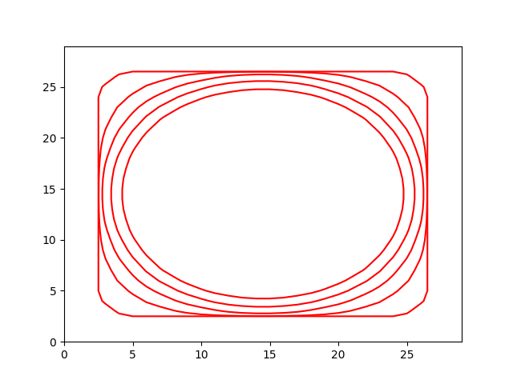
Kaynaklar
[1] Courant, Introduction to Calculus and Analysis Volume 2, sf. 223-232
[2] Wolfram Mathworld, Curvature, http://mathworld.wolfram.com/Curvature.html
[3] Strang, Computational Science and Engineering,
[4] Bayramlı, Diferansiyel Denklemler, Türevler
[5] Kristiadi, Level Set Method Part I: Introduction, https://agustinus.kristia.de/techblog/2016/11/05/levelset-method/
[6] Kristiadi, Level Set Method Part II: Image Segmentation, https://agustinus.kristia.de/techblog/2016/11/20/levelset-segmentation/
[7] Lombaert, Level set method: Explanation, https://profs.etsmtl.ca/hlombaert/levelset/